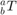

ITOU
Converts from the intern format:  To the user format: for a RRR planar manipulator.
Contents
Calling Syntax
uform = itou(iform)
I/O Variables
IN double matrix iform: Internal Form Homogeneous Transformation Matrix 4x4
OUT double array uform: User Form [x y theta], unities: [meters meters degrees]
Hypothesis
RRR Planar robot
Limitations
The user form is specified for the exercise context only and may not be valid for a robot configuration
Function
function iform = utoi(uform)
Main calculations
% Fetch the values for each variable from the tuple theta = uform(3); x = uform(1); y = uform(2); % Calculate the rotation matrix aRb = [cosd(theta), -sind(theta), 0; sind(theta), cosd(theta), 0; 0, 0, 1]; % Calculate the origin matrix aOb = [x; y; 0]; % Calculate the homogenious transformation matrix aTb = [aRb, aOb; zeros(1,3), 1]; % Output data iform = aTb;
Not enough input arguments.
Error in itou (line 33)
theta = uform(3);
end
Examples
%uform = [1, 0, 90]; %iform = utoi(uform) %iform = % % 0 -1 0 1 % 1 0 0 0 % 0 0 1 0 % 0 0 0 1